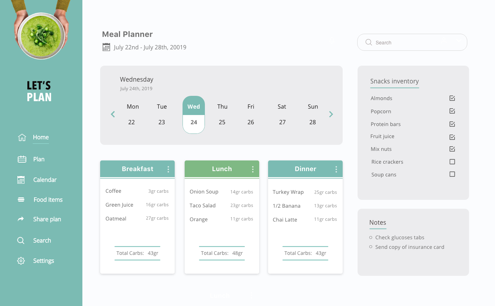

The Task:
Helping students with Type 1 Diabetes adjust to college
- Overview:
-
Tracking what you eat is one of the most important parts of diabetes management. Young adults often struggle
to self-manage their diabetes during the transition from childhood to adulthood.
This transition, especially for students who leave home and go to college, may be complicated by reliance on fast food, busy schedules, late-night studying,
lack
of sleep and alcohol use.
- The Problem:
-
Students with diabetes face a wide range of problems within the academic buildings, particularly navigating diabetes in the dining halls and cafeterias:
- It's often impossible to access nutritional information and serving sizes, making it hard to count carbs.
- There is a limited variety of healthy meals options.
- There is limited access to dining halls during late hours, so students rely on fast food and vending machines.
- There is a lack of access to cooking facilities.
- The Task:
-
- Design a digital platform that continually motivates students to manage diabetes effectively through meal planning, exercise and social interaction.
- Design a dashboard that gives the parents the access to feel fully involved and informed.
- The Solution:
-
Managing diabetes effectively through meal planning and social support.
When students walk into a dining hall and look at all the buffet-style options, it can be very tempting to pile the plate high with a few options of comfort food.
But when they are armed with a meal plan before they enter the dining hall, it is easy to keep track of how many carbs they can consume per meal in order to avoid blood sugar swings.
- Parents Dashboard:
-
Sending a child off to college is an emotional experience for many parents, but when your child has diabetes, it’s bound to be even more overwhelming.
Every parent knows that healthy eating is the cornerstone of healthy living, but when it comes to balanced food, college life can be incredibly tough on diabetes management. There is a whole new world of stress levels and eating habits on
campus.
As a parent, you need that extra peace of mind to feel assured that your child eats well and has access to nutritious food.
Many dining halls publish their weekly menus in advance so if the student is too busy with school work, parents can help their child in the meal planning process and build for them healthy balanced meals along with all the nutrition
information.
